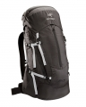

器材库 > 摄影包 > Altra 35 LT Backpack Mens 12366

详细规格
产品类型
双肩背包
发布日期
未知
容量
39L
颜色
黑色
材质
210D尼龙6,6防撕裂面料
重量
1250g
网翼2014-06-24 15:084.42 分
操作性 4.50功能性 4.50美观性 4.00趣味性 4.00耐用性 5.00性价比 4.50
什么都不懂2014-06-23 12:285 分
操作性 5.00功能性 5.00美观性 5.00趣味性 5.00耐用性 5.00性价比 5.00
ou3817997922014-06-23 12:214.75 分
操作性 4.50功能性 5.00美观性 5.00趣味性 4.50耐用性 5.00性价比 4.50
产品图 / 样片
1
评测 / 相关文章
该产品暂无存档的评测文章